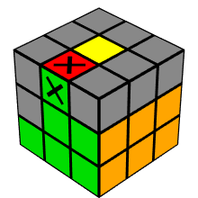
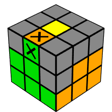
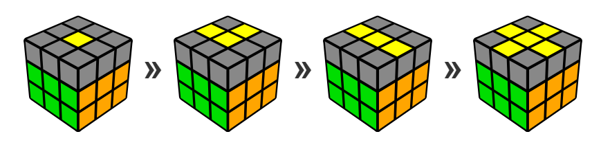
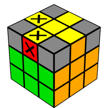

三阶魔方复原方法简介
魔方作为家喻户晓的益智玩具，由匈牙利建筑学教授暨雕塑家鲁比克·艾尔内于1974年发明，最初的名称叫Magic Cube[2]，1980年Ideal Toys公司于贩售此玩具，并将名称改为Rubik’s Cube。下面简要介绍魔方复原的方法。
魔方公式书写方式
为了记录下复原、转乱的过程或公式的步骤，会用Singmaster符号来书写（由David Singmaster发明）。书写方式如下：
- R(Right)、L(Left)、U(Up)、D(Down)、F(Front)、B(Back)分别代表右、左、上、下、前、后层。
- 若是顺时针旋转，则直接写上符号；若是逆时针旋转，则在符号后加上“’”或是“i”；若是旋转180°，则在符号后加上“2”或是“²”。
魔方数学方程式
变化数
三阶魔方的总变化数是：
$${\displaystyle {\frac {8!\times 3^{8}\times 12!\times 2^{12}}{2\times 2\times 3}}=43,!252,!003,!274,!489,!856,!000\approx 4.33\times 10^{19}}$$
三阶魔方总变化数的算式是这样得来：
8个角块可以互换位置（${\displaystyle 8!}$），也可以旋转（3），但不能单独旋转一个角块，所以总共有${\displaystyle {\frac {8!\times 3^{8}}{3}}}$种变化状态。
12个边块可以互换位置（$12!$)，也可以翻转（2），但不能单独翻转一个边块（将两个面对调），也不能单独交换两边块，所以总共有${\displaystyle {\frac {12!\times 2^{12}}{2\times 2}}}$种变化状态。
上帝的数字
所有的三阶魔方都可以在有限步数内复原，1982年，佛雷与辛马斯特合著的《魔方手册》定义任意的三阶魔方都可以保证最少n步复原，并称呼n为上帝的数字。在此书中，证明上帝的数字介于17~52之间。
1995年，瑞德证明上帝的数字介于20-29之间。2006年，雷杜用群论证明上界可改进为27。
2007年，计算机科学家古柏曼与他的学生用20台超级电脑花了8000个小时证明上界可改进为26。
2008年，Tomas Rokicki宣布证明了任何魔方可以在25步以内解开[22]。之后又改进为22步。
2010年，包括Tomas Rokicki和Morley Davidson等人的研究团队证明任意组合的魔方可以在20步内还原，现在上帝的数字正式定为20。
魔方复原方法
以白色面为例，说明魔方复原的简单方法。
第一步白色面的复原
第一步白色面的复原非常简单，分成两小步，如图1和图2所示。
白色面的还原比较简单，就不介绍具体步骤了。
第二步中间层的复原
第二步中间层的复原分成两种情况，如图3和图4所示。


第三步顶层的复原
第三步最后一层的还原遇到的情况很多，目前我也没有完全搞明白，下面简单介绍最后一层复原的步骤，但并不能保证一定能复原。
形成顶层十字

根据顶层状态，多次使用公式F R U R’ U’ F’，以形成顶部十字。
交换顶层十字边块
交换顶层边块，使其边缘颜色保持一致，如图6所示。

交换顶层角块
现在只剩下黄色的角落，将分两个步骤进行。首先，我们必须以定位它们，在下一步骤中定向它们。
定位顶层角块
此算法循环上面图像上顶层的角块，但标有“OK”的前右上角将保留在原位。
定向顶层角块
现在顶层角块都已定位，但角块颜色与周围面不一致，使用如图8所示算法一个一个旋转顶层角块。
首先在突出显示的右前方点，拿着你的手有一个不对准的黄色角落的立方体（见图8）。重复R’ D’ R D算法，直到这一块在它的地方与黄色贴纸。
只将一面向上转动，将另一个错误的黄色拐角移到突出显示的点，并重复R’ D’ R D算法，直到这个黄色面被解决。
移动其他未对齐的黄色边角，一个一个到标记的点，并做公式，直到所有的黄色角落都被解决。
顶层最后两个角块位置对颜色不对的复原方法
将色向不对的两个角放在顶层左手边位置,用公式(R;U;R’;U;R;U2;R’;)(L’;U’;L;U’;L’;U2;L;)。
做一遍如果不对的话,就再做一遍就行了.
参考链接
- 如何解决魔方 魔方,by cub3x3.
- 三阶魔方解法最后两个角如何复原?位置是对的只是颜色对不住？,by qiuyuhanfeng.
- 魔方,by wikipedia.
- 暴强！！！只需7步，任何魔方6面皆可还原！,by 飞天飘渺.